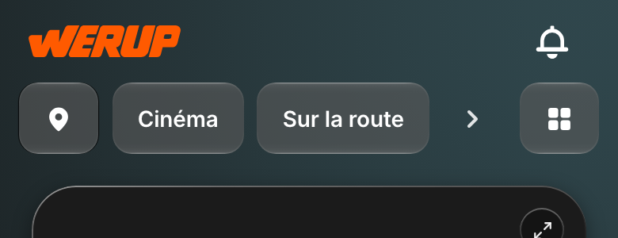
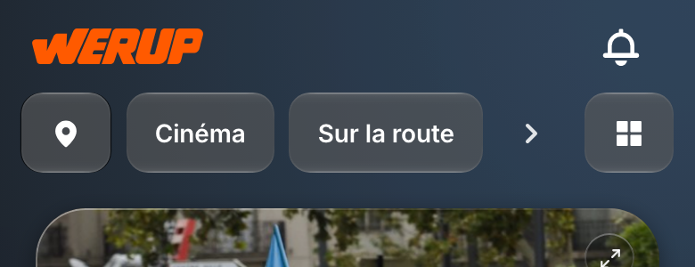
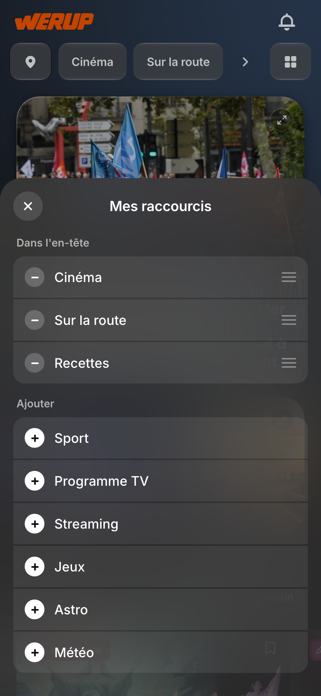

Rendu sur la vraie page d'accueil. Rien n'est changé dans l'application.
Quatre carrés pleins, dans la même capsule que le lieu. Fixé à droite, toujours visible : le lieu ouvre la rangée, le bouton la ferme. Vos raccourcis défilent entre les deux.
Le dessin d'Apple, plus doux.

Plus graphique, plus dur.

Vos raccourcis tremblent comme les apps de l'iPhone : touchez − pour retirer, glissez pour changer l'ordre, touchez + pour ajouter. L'en-tête, juste au-dessus, change en direct.
Comme le Centre de contrôle : − pour retirer, ≡ pour glisser, + pour ajouter. Le plus sobre.

Les capsules tremblent là où elles sont, « OK » pour finir, et une petite feuille pour ajouter. Spectaculaire, mais l'en-tête est étroit : on n'y voit que deux capsules à la fois.